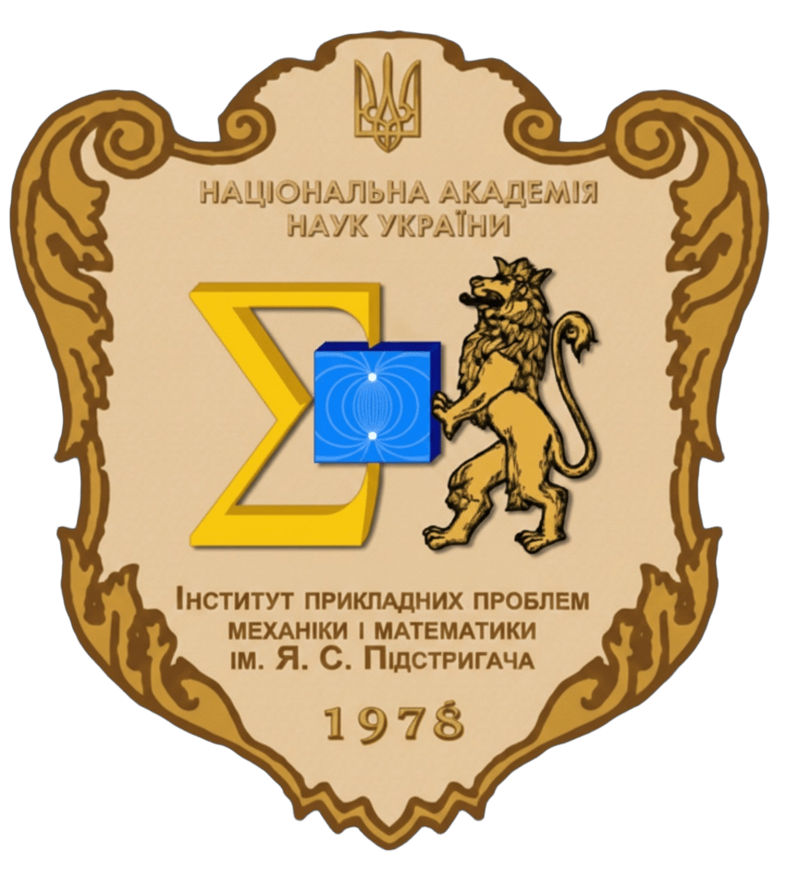
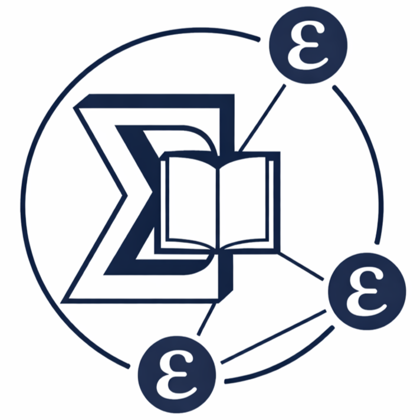
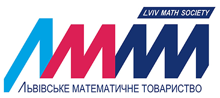

Громадські організації та наукові товариства
Організації Інституту

Первинна профспілкова організація
Захист трудових, соціально-економічних прав та інтересів працівників Інституту.

Рада молодих вчених (РМВ)
Сприяння науковій діяльності, професійному зростанню та соціальному захисту молодих дослідників.
Наукові товариства та осередки
Наукове товариство імені Тараса Шевченка
Математично-природописно-лікарська секція. Співпраця у проведенні конференцій...
Сайт НТШ ↗
Львівське математичне товариство
Об'єднання математиків Львова для розвитку науки та популяризації математичних знань.
IEEE Ukraine Section (West)
Західно-Український осередок найбільшої у світі професійної технічної організації.